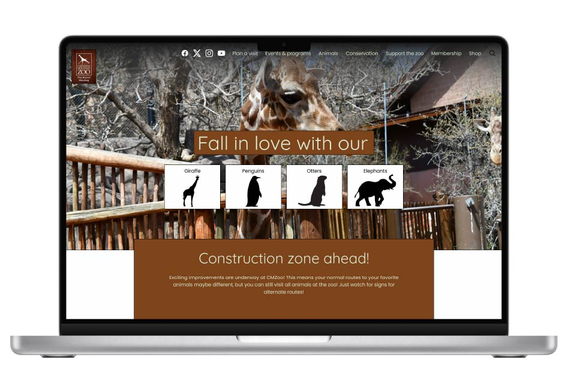
Role: Lead UX Researcher & Lead UI/UX Designer
Tools: Figma
Project Type: Solo Project
The challenge was to redesign the Cheyenne Mountain Zoo website to make information easier to find, reduce unnecessary steps in the user journey, and create a more intuitive structure while working within the prototyping limitations of Figma.
For this UI/UX design project, I redesigned the Cheyenne Mountain Zoo's website to enhance user experience and improve overall functionality. The goal was to create a more intuitive and visually appealing interface that would make it easier for visitors to find information, purchase tickets, and plan their visits. The redesign focused on simplifying navigation, improving accessibility, and incorporating engaging visuals to reflect the zoo's vibrant atmosphere.
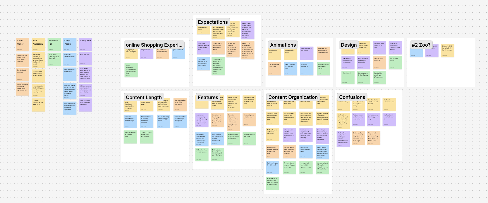
I conducted interviews with five participants to evaluate the current website experience. Users consistently expressed frustration with the checkout flow, describing it as confusing, lengthy, and unintuitive. Across interviews, a major opportunity emerged: simplifying and streamlining the overall website structure to reduce steps and improve clarity.
How might we: Fix the flow of checking out to make the process faster?
I created an updated task flow for planning a visit and purchasing tickets, mapping out the ideal behavior step by step. The focus was on simplicity, reducing unnecessary steps, and making actions intuitive. This flow ensures users can complete their tasks efficiently while minimizing confusion.
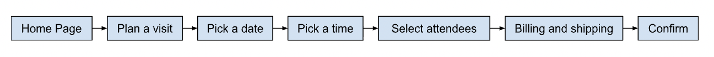
Using the task flow as a guide, I developed low-fidelity wireframes for the key screens in the user journey. The focus was on structure and usability rather than aesthetics. This approach ensured the foundation of the website’s flow was clear and intuitive.


The low-fidelity screens were upgraded to mid-fidelity wireframes, providing a clearer representation of the website's structure. Typography and spacing were adjusted to better reflect the final design. This stage helped ensure the user flow remained intuitive and visually consistent.
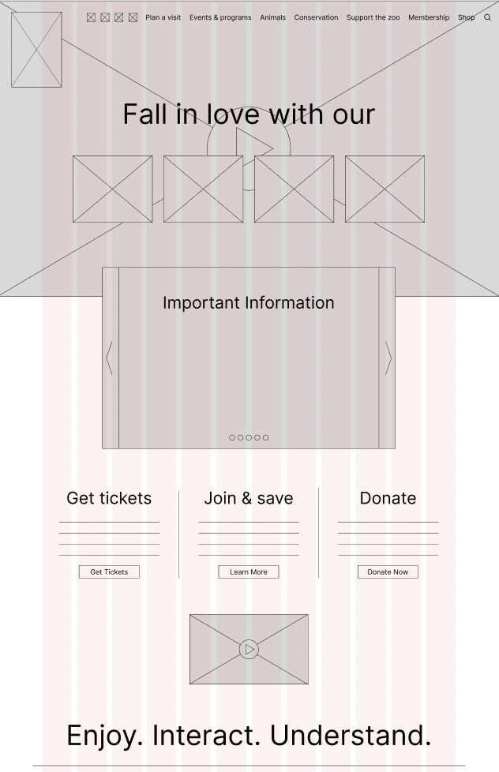
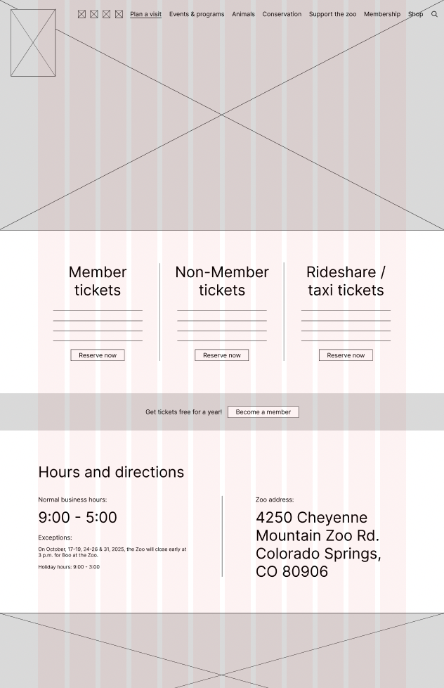
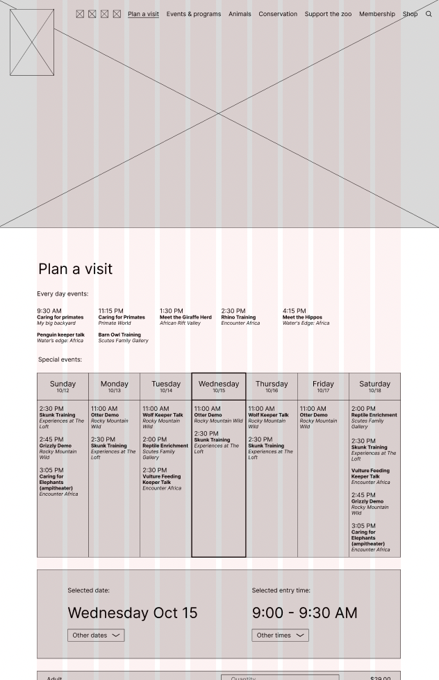
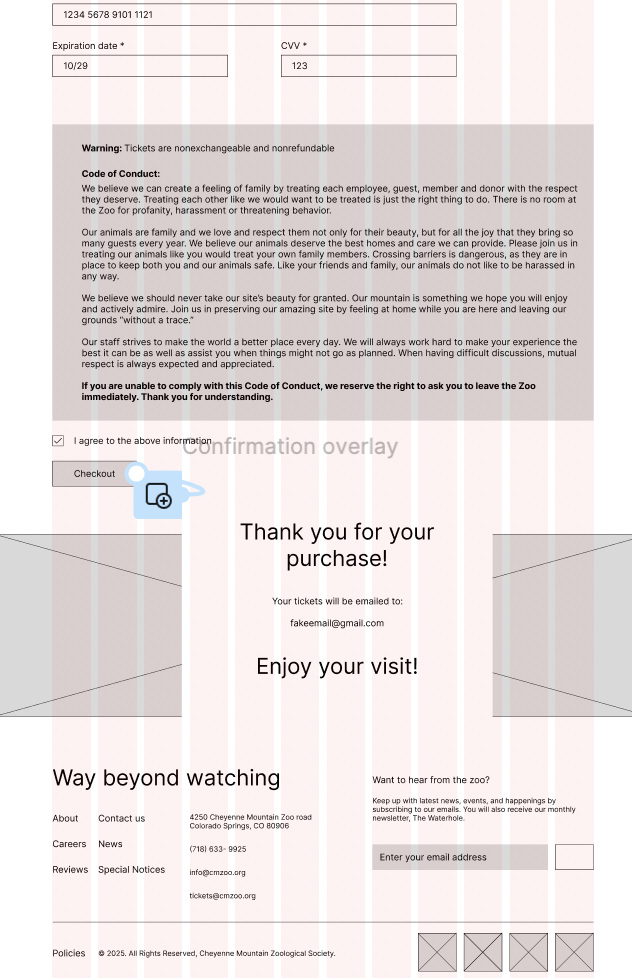
I transformed the mid-fidelity wireframes into a high-fidelity interactive prototype, incorporating color, typography, and branding elements. This prototype allowed realistic interaction and demonstrated the final user experience. Users can navigate the screens as they would on the live website, providing a complete view of the redesign.
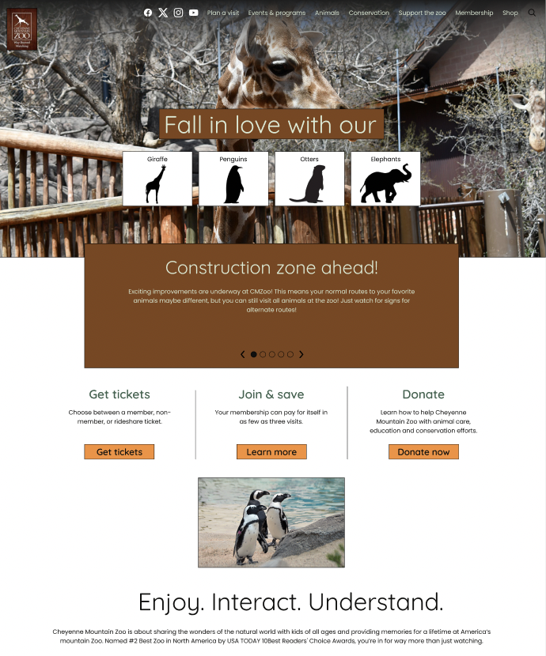
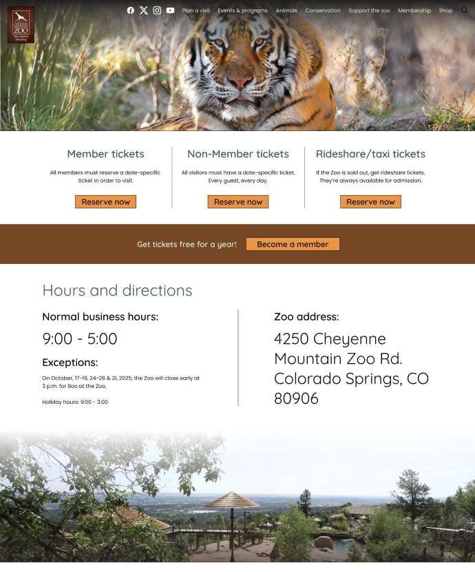
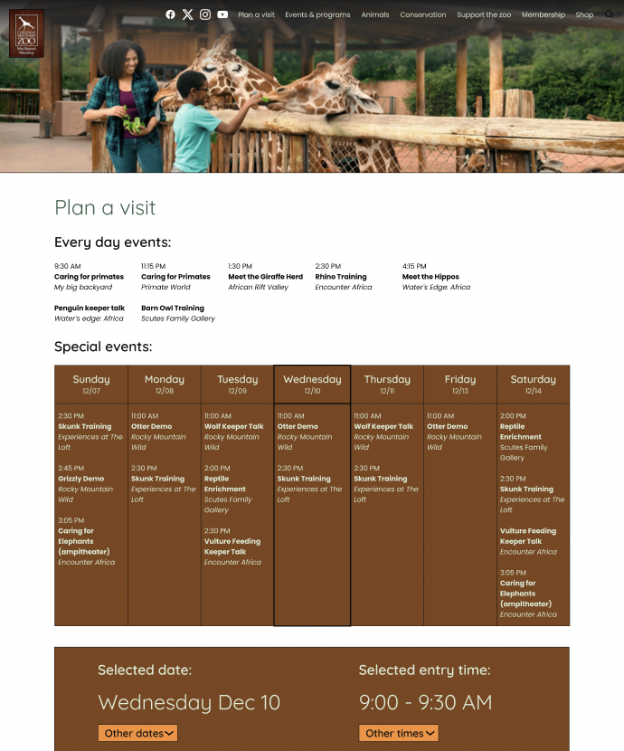
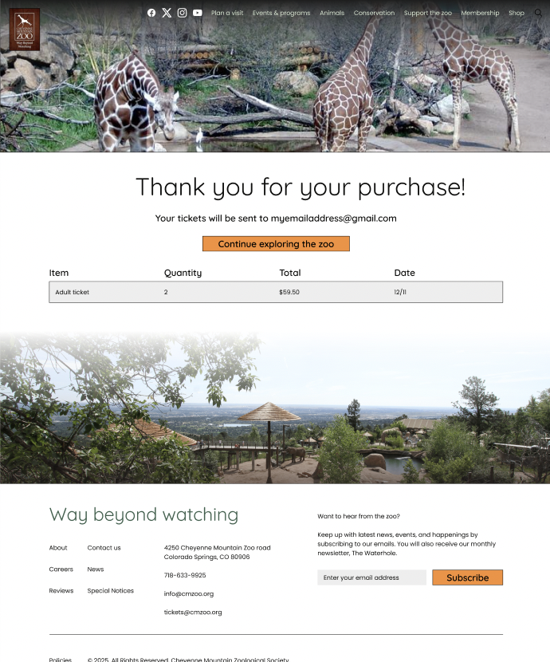
Instructor feedback highlighted areas for improvement in spacing, typography, and overall visual hierarchy. I applied these suggestions, refining font sizes and spacing to enhance readability. Adjustments to screen proportions improved consistency and user experience across the wireframes.
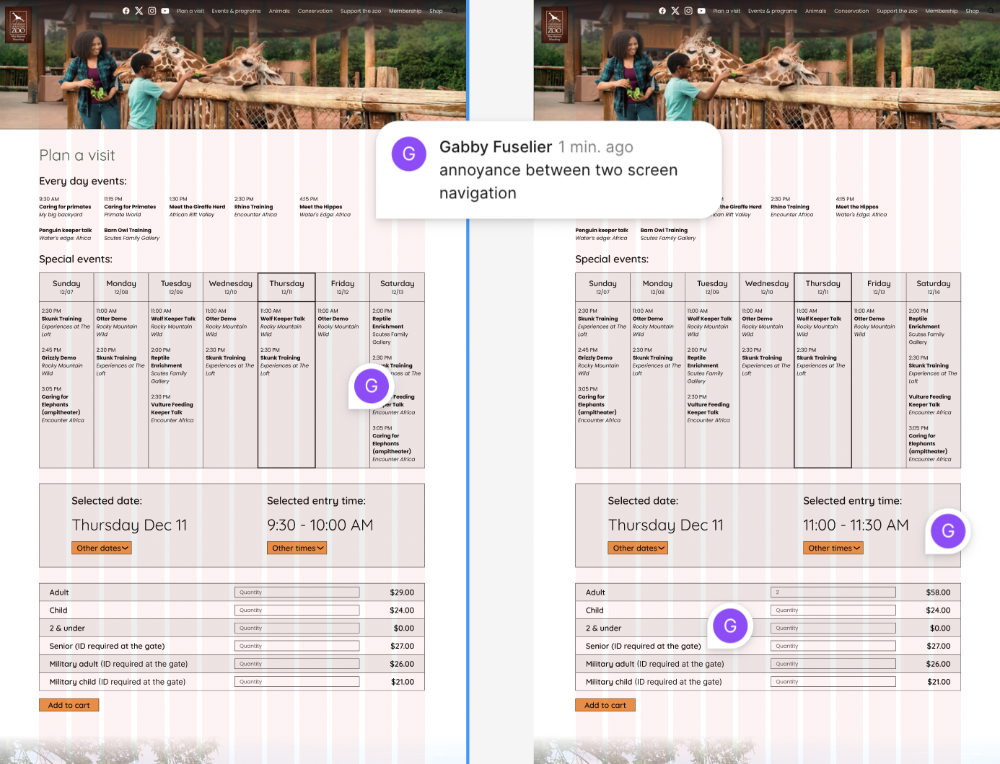
I conducted another user testing with three participants, observing how they navigated the high-fidelity prototype. Users found issues with connections between filled and unfilled aspects of the prototype, which was due to Figma's limitations in simulating realistic interactions. They also found a lack of color to be bland. Overall, the testing highlighted opportunities to improve clarity and design within the constraints of the prototype.
Based on feedback, I made slight adjustments to colorization to improve the aesthetic. These minor tweaks enhanced clarity without changing the overall design or flow. The interface remains visually consistent while being slightly better for users to interact with.
Future steps would include expanding the redesign to cover additional parts of the Cheyenne Mountain Zoo website beyond the ticketing experience. I would also like to test the prototype on mobile and tablet devices to ensure it adapts well across platforms.
This project taught me the importance of balancing aesthetics with functionality. Even though the visual elements evolved, the biggest improvements came from simplifying the flow and reducing friction in key interactions. The process showed me how iterative design, continuous feedback, and testing lead to more thoughtful and effective solutions.